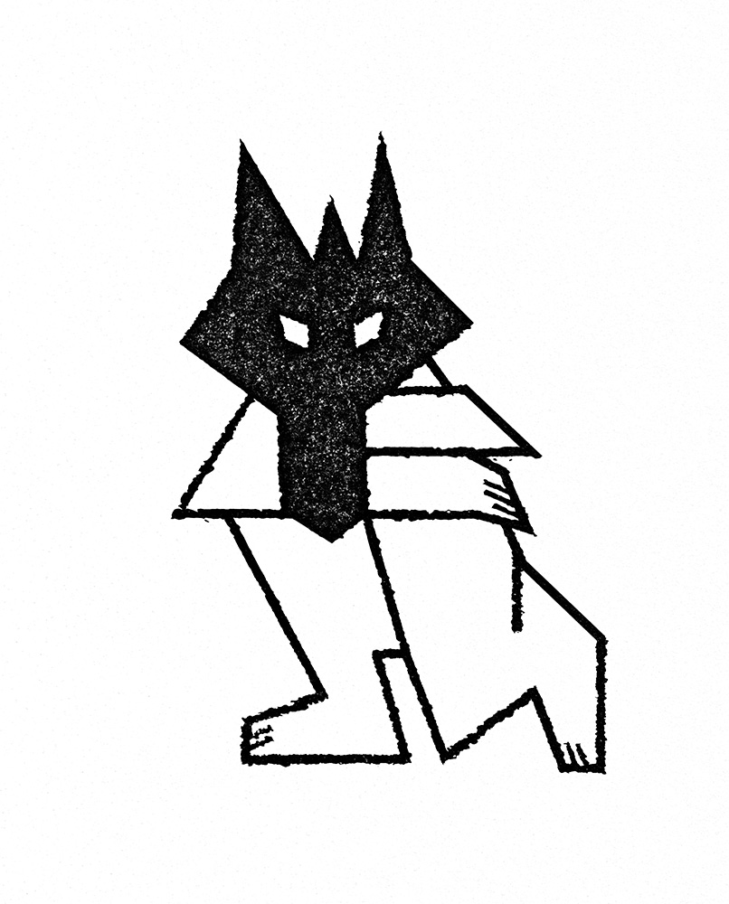
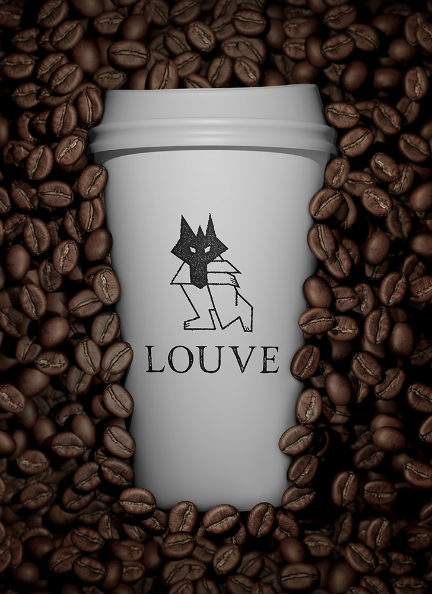
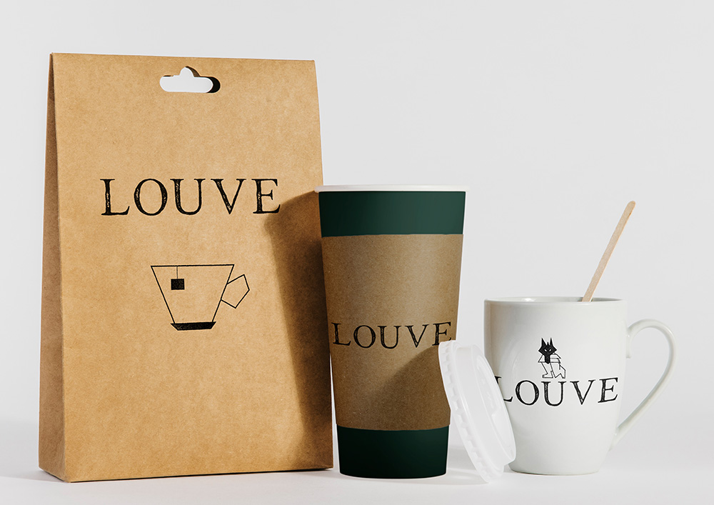
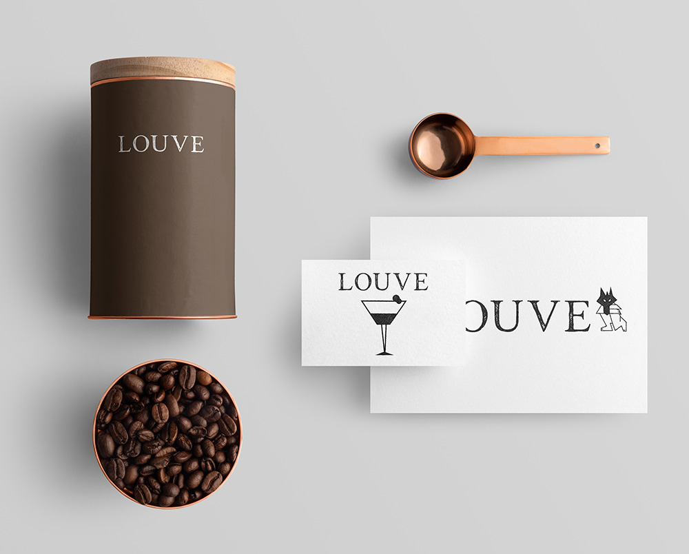
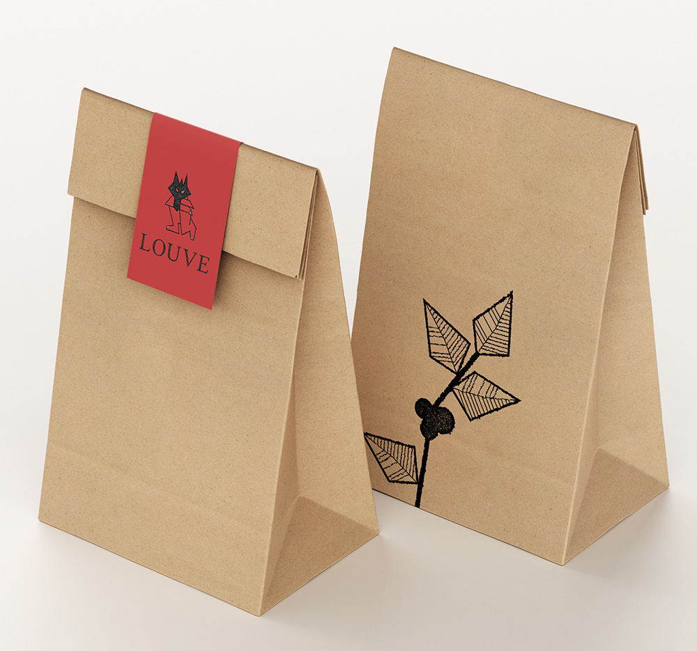

Réalisation complète d’une identité visuelle dans le cadre d’un stage d’une semaine au sein d’un atelier de graphisme. Le projet a débuté par une rencontre et un entretien avec la cliente, permettant d’établir un cahier des charges précis. Dans un second temps, le logotype a été conçu, d’abord esquissé à la main, puis finalisé sur Illustrator. Par la suite, les éléments complémentaires de l’identité visuelle ont été développés pour assurer sa cohérence. Pour clore le projet, une présentation exhaustive de l’identité visuelle a été réalisée devant la cliente.
IDENTITÉ VISUELLE
LOUVE




